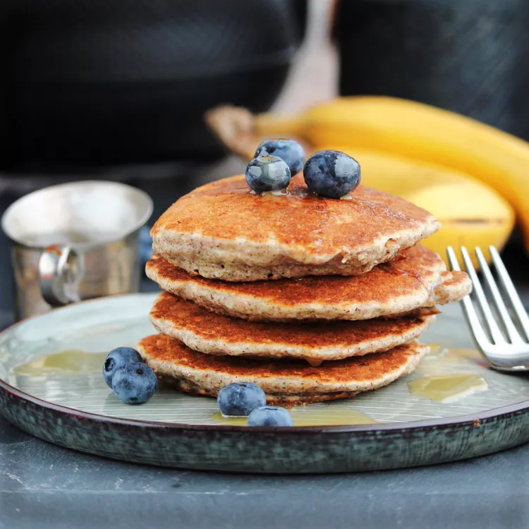

Amazing Pancakes

Description
These hearty pancakes are flavored with buckwheat and coconut. Don't expect a smooth-appearing cake. These pancakes appear lumpy because of the buckwheat groats. Even though these are wheat-free, they are not gluten-free! The honey may not be needed in the pancakes if you will be putting a sweet touch on the finished pancakes.
Ingredients
- 1 cup buckwheat groats
- 1 ½ cups boiling water
- 1 cup spelt flour
- ½ cup unsweetened shredded coconut
- 2 teaspoons baking powder
- 1 cup soy milk
- 1 egg
- 2 tablespoons oil
- 2 tablespoons honey (Optional)
- cooking spray
Directions
- Place buckwheat groats in a bowl. Pour boiling water over groats and set aside for groats to absorb water, about 10 minutes. Retain water if it doesn't all absorb.
- Heat a skillet over medium heat.
- Whisk flour, coconut, and baking powder together in a separate bowl. Beat milk, egg, oil, and honey together in a third bowl. Stir buckwheat groats mixture and flour mixture into milk mixture until just combined.
- Spray skillet with cooking spray. Pour batter, 1/4 to 1/3 cup per pancake, into heated skillet. Cook until bubbles form and the edges are dry, about 2 minutes. Flip and cook until browned on the other side, 2 more minutes. Repeat with remaining batter.